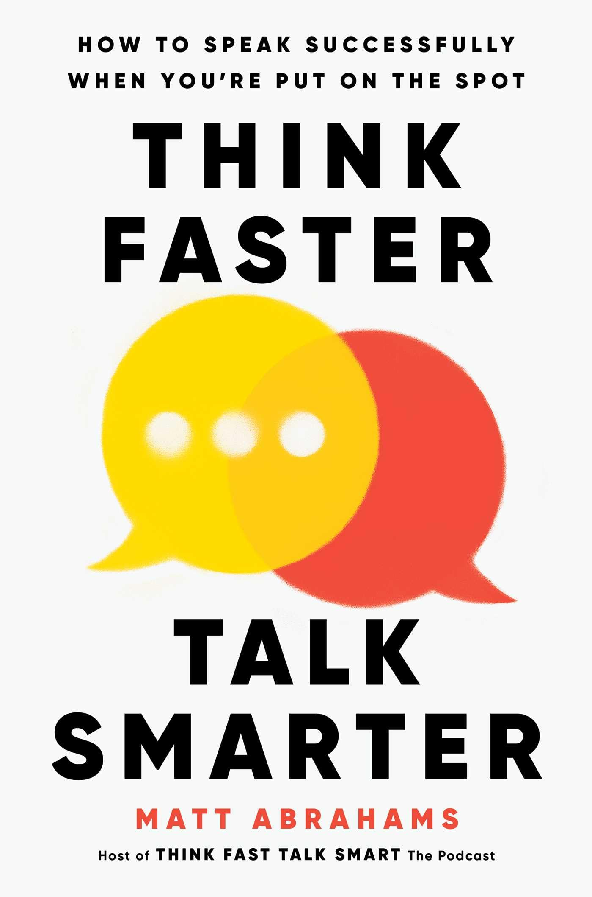
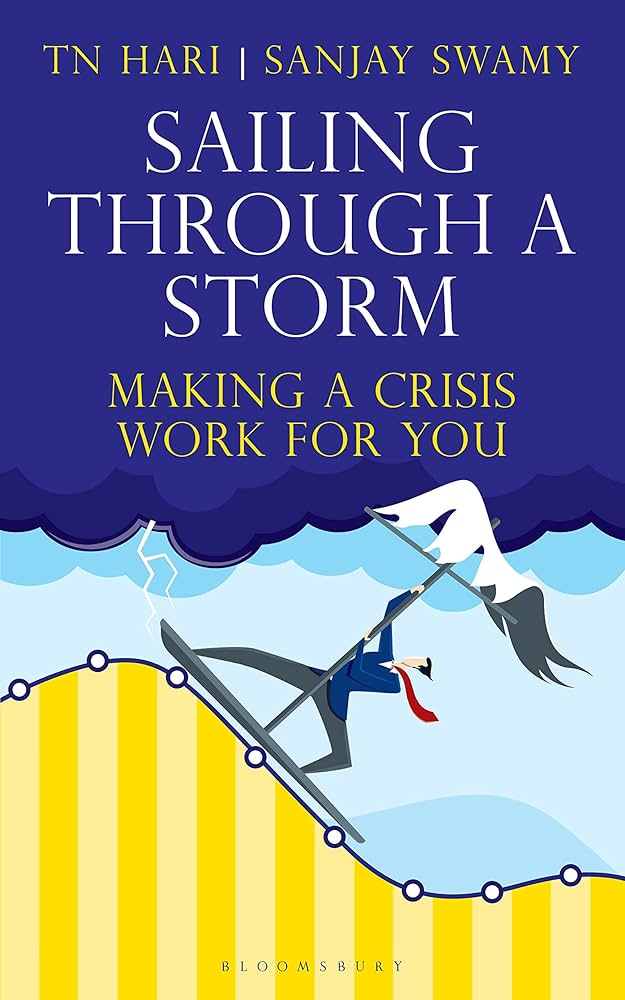

Nir Eyal’s Hooked: How to Build Habit-Forming Products is a thought-provoking exploration of the psychology behind why people become deeply engaged with certain products and services. The book introduces the “Hook Model,” a four-step process—trigger, action, variable reward, and investment—that explains how successful products subtly influence user behavior and create lasting habits.
...Continue Reading...
Thinking Faster, Talking Smarter by Matt Abrahams is a practical and engaging guide that helps readers improve their ability to communicate effectively in spontaneous situations. The book focuses on the common fear many people face when speaking without preparation, whether in meetings, interviews, presentations, or casual conversations.
...Continue Reading...
Sailing Through the Storm is an inspiring and emotionally resonant book that explores the challenges of life and the resilience required to overcome them. Through powerful storytelling and reflective insights, the book emphasizes how difficult phases—much like storms at sea—are temporary, yet essential for personal growth and transformation.
...Continue Reading...